In this chapter, we delve into the fascinating world of databases and database management systems (DBMS). We introduce the concept of the three-level architecture for a DBMS, with a primary focus on the relational database model. Real-world examples illustrate the operational aspects of this model. Furthermore, we explore the Standard Query Language (SQL) as a vital tool for manipulating data in relational databases. We touch briefly on the database design process and conclude with a glance at other existing database models.
After studying this chapter, the student should be able to:
Define a Database and DBMS: Gain a comprehensive understanding of what constitutes a database and a database management system, along with an insight into the components that make up a DBMS.
Analyze DBMS Architecture: Explore the ANSI/SPARC-defined architecture for a DBMS, which comprises three levels: internal, conceptual, and external. Each level plays a vital role in managing and presenting data.
Survey Database Models: Examine the three traditional database models - hierarchical, network, and relational. Focus particularly on the relational model, a key player in today's database landscape.
Operate in a Relational Database: Gain proficiency in executing operations on relational databases using SQL commands, empowering you to retrieve, manipulate, and manage data efficiently.
Design Databases: Get a glimpse of the steps involved in designing a database, starting with the creation of an Entity-Relationship Model (ERM) and E-R diagrams. Understand how entities, attributes, and relationships are defined within this model.
Normalize Relations: Delve into the concept of normalization, a crucial process that ensures data integrity and reduces redundancy in relational databases. Discover the hierarchical levels of normalization and the rationale behind them.
Explore Database Diversity: Recognize that relational databases are not the sole players in the database realm. There are other database models, such as distributed databases and object-oriented databases, each with its own unique characteristics and applications.
Understanding Access Methods: Begin by comprehending the two main access methods: sequential access and random access. Explore how data is organized and retrieved in each access method. Consider the benefits and limitations of each access method in various applications.
File Structure and Organization: Explore the different file structures, including sequential files, indexed files, and hashed files. Understand how these file structures are organized and their role in data storage and retrieval. Gain insight into address collisions and their resolution, as well as the use of directories for file organization.
Application and Real-World Relevance: Relate the concepts learned to practical, real-world scenarios. Think about how various file structures and access methods are applied in different fields and industries. Consider the implications and trade-offs of choosing specific file structures for data management.
Data Structure
A data structure uses a collection of related variables that can be accessed individually or as a whole. In other words, a data structure represents a set of items with a specific relationship between them.
Arrays
An array is a fixed-size, sequenced collection of elements of the same data type. The elements of the array are individually addressed through their subscripts. Loops make array processing easy.
Array Applications:
Frequency Arrays
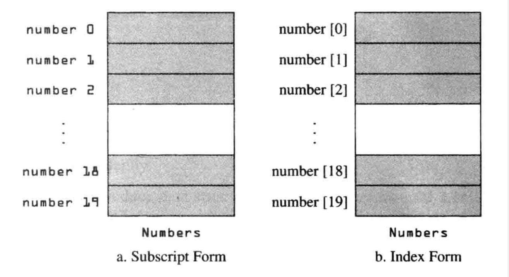
Histograms
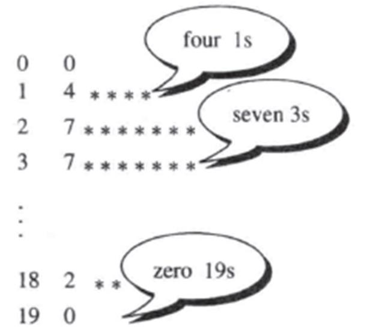
Two-dimensional arrays
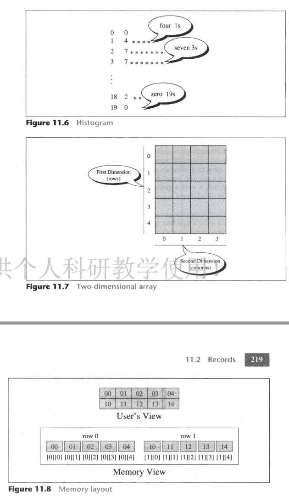
Memory layout
Records
A record is a collection of related elements, possibly of different types, having a single name. Each element in a record is called a field. A field is the smallest element of named data that has meaning. Since each field in a record has a name, we could simply use the name. Many programming languages use a period to separate the record name from the field name.
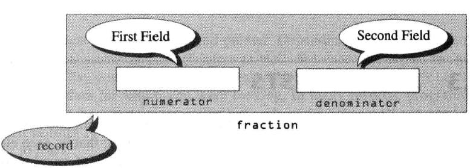
Linked Lists
A linked list is an ordered collection of data in which each element contains the location of the next element; that is, each element (node) contains data and a link. The link contains a pointer (an address) that identifies the next element in the list. The link in the last element contains a null pointer, indicating the end of the list.
Nodes
A node in a linked list is a record that has at least two fields. The nodes in a linked list are called self-referential records.
Pointers to Linked Lists
A linked list must always have a head pointer.
Operations on Linked Lists:
Inserting a node
Deleting a node
Searching a list
Retrieving a node
Traversing a list
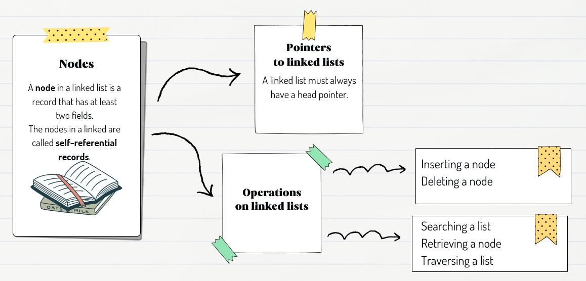
Abstract Data Types (ADTs)
In data processing, we need to define data as a package including the operations defined for the package. We need to write codes that can be used for all programmers. With an ADT, users are not concerned with how the task is done but rather with what it can do. It allows programmers to use functions while hiding the implementation. We abstract the essence of the process and leave the implementation details hidden.
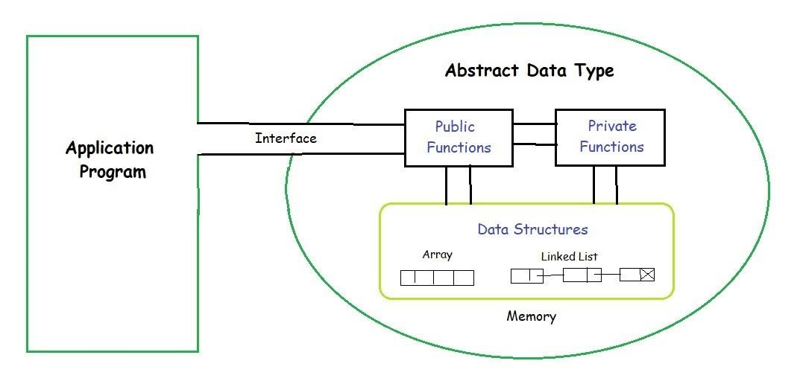
Linear Lists
A linear list is a list in which each element has a unique successor. Linear lists are used in situations where the elements are accessed randomly.
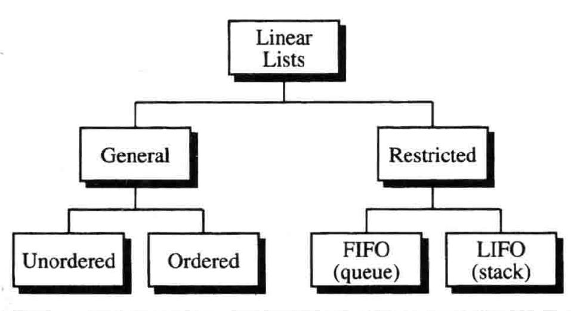
Stacks
A stack is a restricted linear list in which all additions and deletions are made at one end, called the top. It is used for reversing data and backtracking.
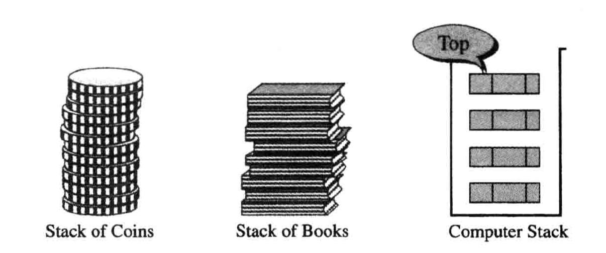
Queues
A queue is a linear list in which data can only be inserted at one end, called the rear, and deleted from the other end, called the front.
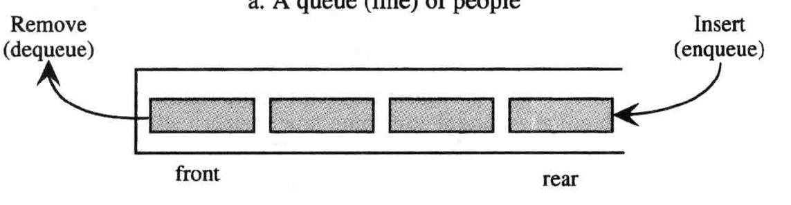
Trees
Terms related to trees include nodes, branches, root, leaf, internal node, parent, child, siblings, ancestor, descendant, path, level, height, and subtrees.
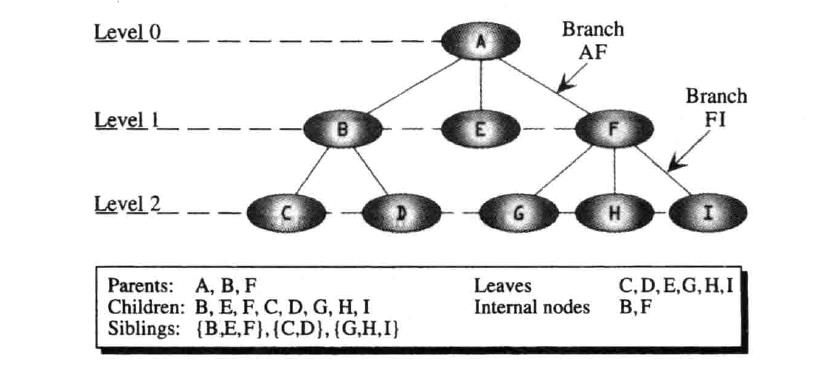
Binary Trees
A binary tree is a tree in which no node can have more than two subtrees. The structure is referred to as operand-operator-operand.
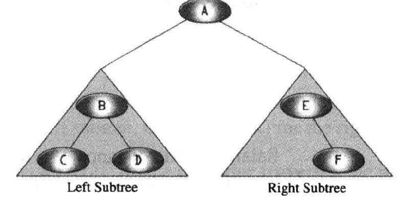
Graphs
A graph is a collection of nodes, called vertices (or vertex), and a collection of line segments, called edges, connecting pairs of vertices.
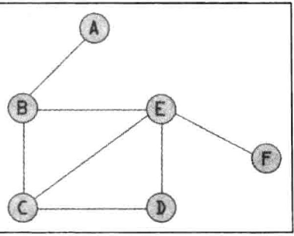
Databases
1. Introduction
Traditionally, data storage relied on individual, unrelated files, often referred to as flat files. In this outdated system, each application program within an organization had its own set of files. For example, within a university, different departments maintained their own files: the record office had a file for student information and grades, the financial aid office managed files for students needing financial assistance, the scheduling office kept records of professors and the courses they taught, and the payroll department stored information about all staff, including professors. Nowadays, all these disparate flat files can be unified into a single entity known as the database for the entire university.
2. Definition of a Database
While it's challenging to provide a universally accepted definition for a database, a common one is as follows:
Database: A database is a collection of related, logically coherent data used by the application programs in an organization.
3. Advantages of Databases
Compared to flat-file systems, databases offer several advantages:
Less Redundancy: Flat-file systems often have redundant data, with the same information stored in multiple files. Databases reduce this redundancy, making data storage more efficient.
Inconsistency Avoidance: When data is duplicated in multiple places, changes must be made consistently across all locations. Databases centralize data, reducing the chances of inconsistency.
Efficiency: Databases are usually more efficient as data is stored in fewer places, allowing for faster data access.
Data Integrity: Maintaining data integrity is easier in a database system since data is stored in fewer locations.
Confidentiality: Centralized data storage in a database makes it easier to maintain information confidentiality.
4. Database Management System (DBMS)
A Database Management System (DBMS) is responsible for defining, creating, and maintaining a database. It also controls access to the data within the database. A DBMS is composed of five components:
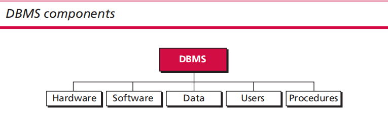
Hardware: This includes the physical infrastructure like terminals, hard disks, main computers, and workstations that provide access to data.
Software: The software consists of programs that allow users to access, maintain, and update data. It also manages user access rights to specific parts of the database.
Data: Data in a database is physically stored on storage devices. The separation of data from the software accessing it allows for changes in the software without affecting the data's physical storage.
Users: Users in a DBMS can be divided into two categories: end users and application programs. Database administrators (DBAs) and normal users are end users, with DBAs having higher privileges.
Procedures: The DBMS relies on a set of procedures and rules that guide the users of the database.